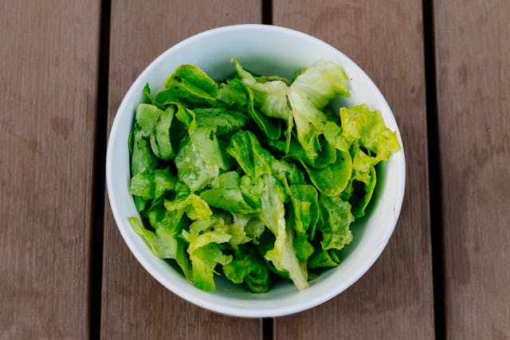
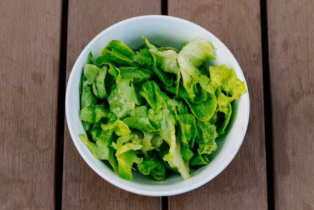

Classes Of Food
carbohydrates
It is one of the 7 classes of food. This is made up of carbon, hydrogen
and oxygen.Carbohydrates are a major source of energy of our body, and
they come mainly from grains, such as rice and noodles.
Carbohydrates are major sources of fuel to the body especially for our
brains and during physical activities.
- rice
- yam
- maize
- potatoes
- bread


protein
Protein is one of the organic foodstuffs, with its end product of
digestion as amino- acids. It is found in both plant and animal food.
Proteins support growth, repair and maintenance of tissues. Every
molecule of protein is made up of thousands of amino acids. Our body
needs these elements to create new proteins and maintain the existing
ones. Protein that can be produced in our body is called non-essential
protein, while protein that can not be produced there is called
non-essential.
- fish
- meat
- egg
- cheese
- milk


fat
Most of the fats in our diet come from animal while most of the oil come
from plant, oil is liquid while fat is solid at room temperature
It plays a role in maintaining cell membranes. Fat also helps protect
the vital organs inside the body.
- vegetable oil
- cream
- butter
- palm oil
- groundnut oil

vitamins
Vitamins are essential substance necessary for body maintenance and good
health. Vitamins are an essential part of our immune system as it helps
us to regulate and maintain the healthy process of our body. They can be
found in almost any product on the Earth.
Vitamins are essential nutrients because they help build and maintain
healthy bones and muscle tissues.
- fish
- carrot
- butter
- liver
- cheese

fiber
Fiber-rich foods have a mix of different fiber types. Some fiber helps
keep stool moving in the large intestine.
Fiber is needed to keep our digestive system healthy and ready to do its
job. It also contributes to processes like stabilizing cholesterol and
glucose levels.
- fruits
- vegetables
- grains
- beans
- peas


minerals
Minerals are very important because the body needs them for normal
development and for regulation of metabolic process.The principal
mineral includes calcium, iron, sodium, iodine, phosphorous, fluorine.
Minerals assists in the regulation of many body functions like
regulating fluids and producing energy and health for our bones and
blood.
- vegetables
- eggs
- beans
- liver
- sea food

Water
- What is water?
-
Water is classified as a beverage or a liquid. While it does not
provide any significant caloric content or nutrients like proteins,
fats, or carbohydrates, it plays a crucial role in maintaining
hydration, aiding digestion, and facilitating various bodily
function.
Water is the most important nutrient mainly because it is needed for
our survival. Human is essentially 80% water.
- broccoli
- cucumber
- lettuce
 
